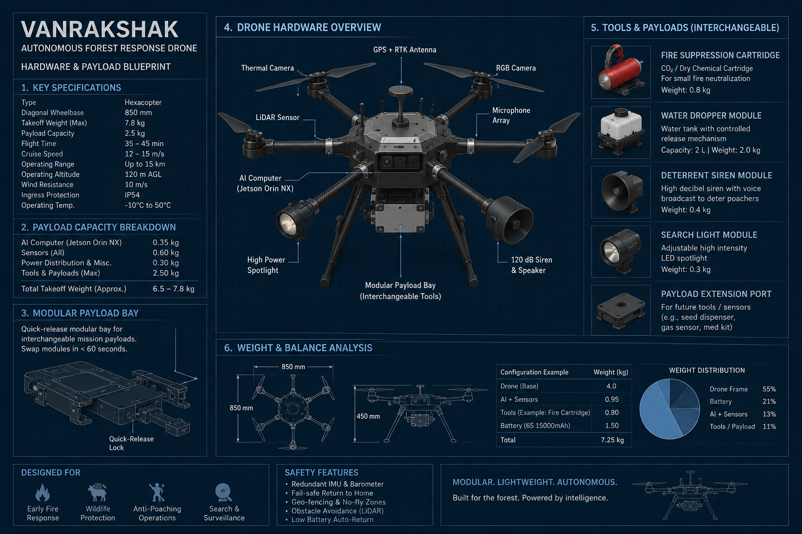
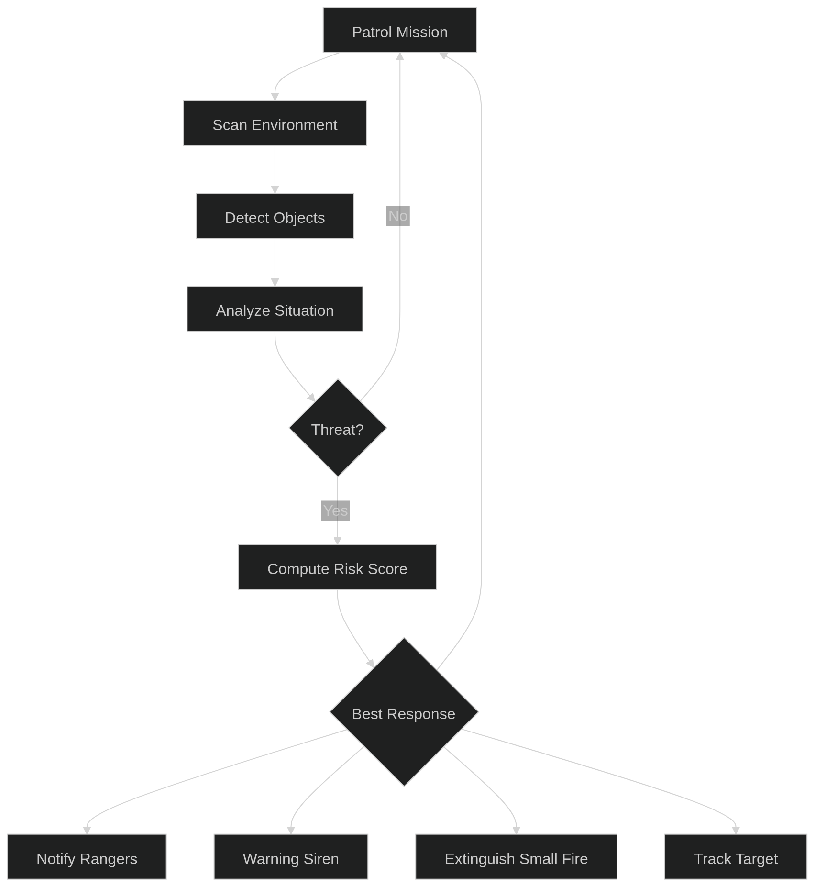
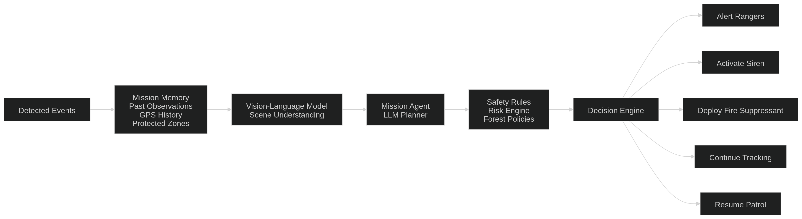

Perception
YOLOv8n + ByteTrack, sampled every second frame, with stable IDs and fallback IDs.
VanRakshak turns recorded drone footage and simulated telemetry into an explainable command-and-control replay: detect, gather evidence, reason, transition, act — and log every decision.

The MVP is intentionally built around immutable mission events. Every view is a projection; every action carries evidence; every policy is independent of the mission state machine.
YOLOv8n + ByteTrack, sampled every second frame, with stable IDs and fallback IDs.
Quality-aware crops, content-addressed artifacts, bounded track evidence.
Human, vehicle, wildlife, railway and thermal policies return normalized decisions.
Separate mission and incident lifecycles with deterministic reason codes.
Commands are idempotent, timestamped, evidence-linked and ACK-tracked.
These are measured software runs on the project’s real clips — not a slideware estimate. The system is explicit about what the general-purpose model can and cannot see.
On 04_wildlife_elephants_monitoring.mp4, YOLOv8n + ByteTrack produced 735 detections across 225 sampled frames. The VLM described the scene as:
Policy output: WILDLIFE_ALERT + DISPATCH_RANGER. Human siren: not emitted.
The explicit confirmed-human replay produced the positive threat path:
| Mission state | VERIFY |
| Action | SIREN_ACTIVATE |
| Action | DISPATCH_RANGER |
| Lifecycle | Both acknowledged |
The vehicle clip produced dispatch, but no siren — because detection is not confirmation.
| Clip | Frames / sampled | Detections | Tracks | Runtime | Interpretation |
|---|---|---|---|---|---|
| Thermal intruder | 313 / 157 | 0 | 0 | 7.90 s | COCO model limitation |
| Intruder vehicle | 647 / 324 | 157 | 27 | 9.66 s | Vehicle/person path |
| Thermal wildfire | 450 / 225 | 1 | 1 | 9.72 s | Not fire-trained |
| Wildlife elephants | 450 / 225 | 735 | 11 | 11.95 s | Wildlife path |
The differentiator is not just detection accuracy. It is the discipline to route uncertainty into review instead of turning every anomaly into an alarm.
Human siren activation requires a persistent person track, sufficient confidence, and VLM confirmation. Wildlife and railway events use wildlife-safe alerting. Thermal/fire input is explicitly unsupported and cannot activate suppression.
The dashboard is not a decorative HUD. It is a window into the event log: mission state, incidents, telemetry history, evidence drawers, command ACKs and paginated replay controls.

Replay timestamps—not wall-clock time—drive decisions. Resetting the mission replays the same stream and produces the same projection.

Perception, evidence, VLM analysis, policies, state transitions and simulated commands are all visible as ordered events.
“The system does not merely see a target. It explains what it saw, chooses the least harmful appropriate action, and proves how it got there.”VanRakshak / Replay-first MVP verdict